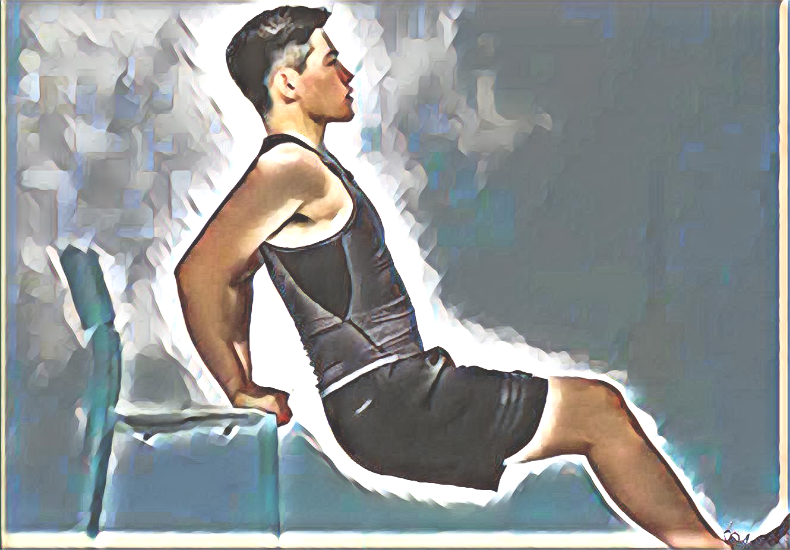
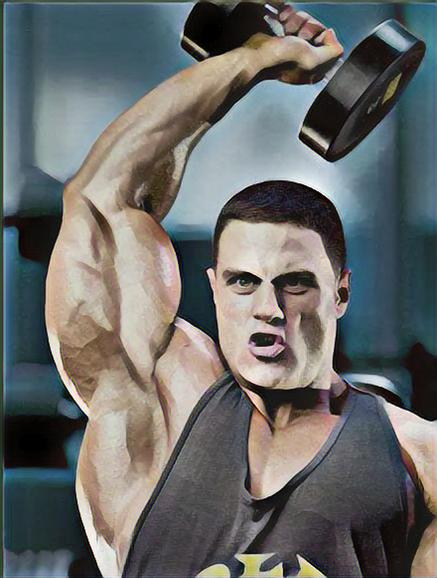
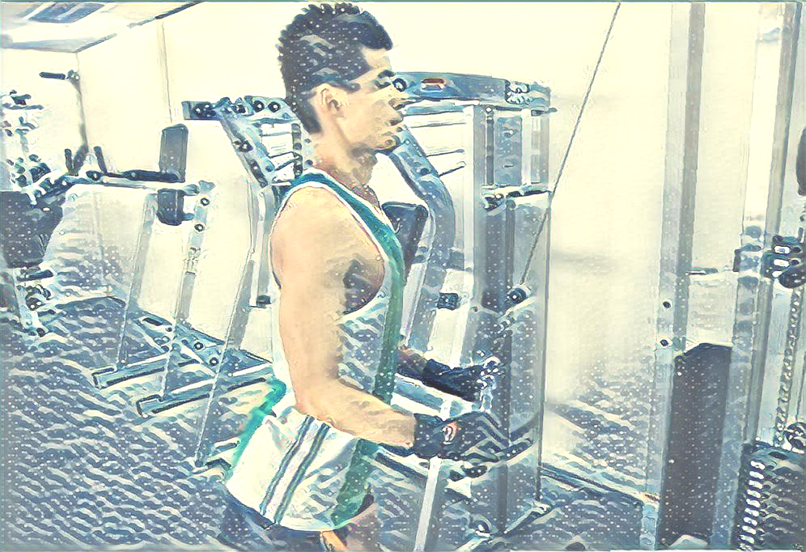
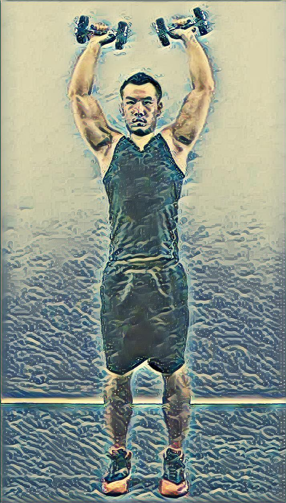

仰卧撑〈Supine support〉 仰卧撑顾名思义身体仰卧撑起自身重量或负重。类似于俯卧撑。仰卧撑属于孤立形式的反屈伸动作，也形象称为反屈伸，主要锻炼手臂肱三头肌。是徒手锻炼的经典方法之一。利用凳子椅子等支撑物可以更好的锻炼目标肌肉。 仰卧后撑是一种对肱三头肌刺激极大的简单运动。你也可以只用一个长凳，双腿支撑只地面上。伸展肘关节，感受肘部舒展运动。凳上反屈伸(Bench Dip)在两个长凳间进行，属于孤立形式的反屈伸动作，也形象称为仰卧后撑，属于较难控制的动作，因此需要肱三头肌达到一定力量再来练习。 起始姿势：身体仰卧，两手背后撑在稍高的凳子上，两脚放在较矮的凳子上，身体其它部分悬空。 动作过程： 1.呼气，两肩放松，两臂慢慢屈肘，身体尽量下沉(尤其要沉臀)，稍停2-3秒。在身体下沉时，动作要平稳，始终控制住肱三头肌慢慢下降，直至感到肱三头肌充分伸展。 2.然后吸气，用力伸两臂撑起身体还原。以肱三头肌收缩力，使手臂伸直和肱三头肌处于“顶峰收缩”位，稍停。重复以上动作过程。 注意事项：1.臂屈伸时中速平稳，身体要直，两肘要向内夹臂。2.抬高脚的高度或负重(腰上负重铃片)可提高训练难度，加大负荷刺激。
3.如果力量不够，可以降低腿的高度。
哑铃颈后臂屈伸〈Dumbbell Triceps Extension〉 与用杠铃比较起来，哑铃颈后臂屈伸能更大限度刺激肱三头肌，尤其是哑铃可以还可单手颈后臂屈伸。哑铃颈后臂屈伸同样有坐姿和站姿之分，建议使用坐姿。 1.双臂颈后臂屈伸 (1)两手合握一个哑铃，将其高举过顶后，屈肘，让前臂向后下垂。 2.两上臂贴近两耳，保持竖直，不摇动；收缩三头肌，逐渐伸展肘关节，把前臂向上挺伸，直到臂部完全伸直，三头肌彻底收紧；静止一秒钟，再屈肘，让前臂徐徐下垂到开始位置，使三头肌尽量伸展。 2.单臂颈后臂屈伸 (1)正坐在凳上，两脚平踏在地上，右手持铃，掌心向前，伸直在头顶上方；左手托于左侧腰间。 (2)右上臂紧贴右侧耳旁，不准移动；持铃以半园弧落下至左肩上方，持铃下落越低越好。然后，以右臂肱三头肌的收缩力，持铃向上举起还原；重复做，左、右手交替做时，要完成同样次数。


重锤下压〈Hammer down〉 注意事项：上臂始终紧贴体侧。 动作描述：略含胸收腹，两腿微屈，两臂完全弯曲，重锤握把应位于胸前乳头上方，绳束尽量靠近身体，上臂紧贴耳侧。两手垂直向下压，直至两臂完全伸直。 常见错误 1.动作过程上臂离开躯干，肘关节提得过高，且没有充分屈前臂，肱三头肌达不到充分伸展。 2.下压时前臂没有充分伸直，主动肌达不到顶峰收缩状态，动作不到位，效果欠佳。 纠正方法 出现以上两种错误主要原因是负荷过大，主动肌失去对重量的控制，应调整练习负荷。
窄握卧推〈Close Grip Barbell Press〉 窄握卧推是个复合型练习，但主要锻炼肱三头肌，其他对胸大肌的内侧部位，三角肌前束也有不错的刺激。
目标锻炼部位：主要锻炼肱三头肌，对胸大肌的内侧，三角肌前束也有锻炼 训练步骤 1.仰卧在长凳上，两脚平踏在地上，以维持身体平衡。两手握住横杠中间，两手窄握，间距为一掌宽。固定肘，横杠置于胸前，然后两上臂靠近体侧内夹，用三头肌收缩力量将两臂完全伸直，两臂伸直持铃支撑在两肩上方。 2.两臂慢慢弯屈落下至横杠触及胸部，然后向上推起至开始位置，重复练习。 注意事项 注意宽握和窄握的区别：宽握卧推主要是锻炼胸大肌，由内侧向外侧发展；窄握才是主要锻炼肱三头肌。 控制好呼吸，意识控制用三头肌发力将杠铃推起。


仰卧杠铃臂屈伸〈Barbell Lying Triceps Extension〉 仰卧杠铃臂屈伸是锻炼肱三头肌最基础的动作，贯穿练习肱三头肌各个阶段的重要动作，也是最有效的动作之一。 动作要领： 身体平躺在长凳上，双手窄握曲柄杠铃，两臂伸直，保持与肩同宽的位置并且垂直于身体。 动作开始时吸气，此时上臂不动，弯曲肘关节，使前臂缓慢向头部上方下落，到离额头两公分的位置时，运用肱三头肌的力量将小臂挺直，同时呼气，手臂再次垂直于身体时，停顿一秒钟再次下落。反复。 注意事项： 1.如果肘关节力量薄弱，可以不将手臂完全伸直，以避免受伤。 2.大重量练习挺直手臂时，应尽量用意识克制使身体不离开平登。 3.接近力竭的时候，垂直的大臂可以稍稍向头的方向倾斜，借一点上胸的力量再做几次，可以让肱三头肌得到更多的刺激。 4.双臂起落时双肘的距离要保持不变，保证刺激的是肱三头肌中部的位置。
器械下压〈Cable Pushdown〉 动作描述： 1.面对臂力训练机两脚分开站立，身体呈挺胸收腹紧腰状，屈臂两手紧握阻力杠两端把柄（直杆、v形、绳索套等不同形式，如下图：），两手间距小于肩宽，肘关节紧贴体侧。 2.吸气，小臂用力向下压撑阻力杠，使臂伸直，稍停2～3秒钟；然后呼气，缓慢还原，感受肱三头肌一样在用力；重复练习。


站立哑铃托举〈Standing Dumbbell Press〉动作要领
1. 身体直立，双脚与肩同宽。双手各持一只哑铃，手臂在身体两侧自然下垂，掌心相对。然后慢慢将哑铃提起，直至上臂与地面平行，前臂与地面垂直，掌心向前，肘部向外。这是动作的起始位置。
2. 将哑铃向上推举，同时呼气，直至手臂自然伸直，哑铃到达头部上方。
3. 在顶端稍适停留，感受肩部的收缩。然后慢慢将哑铃放回起始位置，同时吸气。
4. 以上是一次完整动作，重复动作至推荐次数。
变化：这个动作也可以单手做，另一只手扶着固定物来稳定身体。